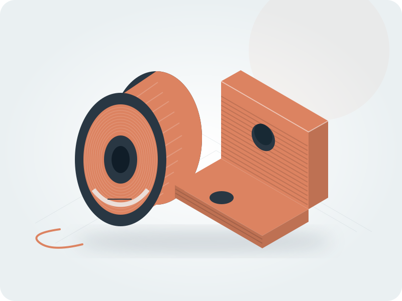

Material guides
Find the right filament for your next print. Start with the essentials, then explore the settings, properties and sources that matter to you.
Start exploring
PLA (standard)
A familiar starting point for models, prototypes and everyday prints at room temperature.
25 product listingsPETG
A practical step up from PLA for tougher functional parts. Expect a little more tuning.
21 product listingsASA
A material to consider for outdoor parts. An enclosed printer is part of the setup.
14 product listings
TPU 95A
For flexible parts such as gaskets, protective covers and vibration mounts.
15 product listingsPolycarbonate (PC)
For demanding functional parts where toughness and heat tolerance matter.
9 product listings
Carbon-fibre PA6 (PA6-CF)
A stiff, reinforced engineering material for brackets, tooling and loaded parts.
6 product listingsBrowse by material family
83 materials
PLAModels, prototypes and decorative prints14 materials
High-Speed PLA
PLA with a raised melt index and tuned crystallisation so it can be extruded at roughly 24 mm³/s, about 30 % more flow than…
10 product listingsMatte PLA
PLA compounded with a chalk-type mineral filler for a diffuse finish; density rises to 1.31–1.38 g/cm³ and flexural strength…
10 product listingsPLA (standard)
A familiar starting point for models, prototypes and everyday prints at room temperature.
25 product listingsPLA+ / Tough PLA
PLA blended with impact modifiers: notched impact strength rises five- to nine-fold while stiffness and tensile strength fall…
11 product listingsRecycled PLA (rPLA)
PLA regranulated from post-industrial waste; Prusa's own testing shows mechanical parity with virgin PLA, while colour range…
8 product listingsSilk PLA
PLA with gloss-forming additives; the finish costs elongation at break, which falls to 2.8 %, and layer adhesion, which in…
15 product listingsCarbon-fibre PLA (PLA-CF)
PLA with 5–10 wt% chopped carbon fibre: stiffness rises by roughly a third and the surface goes matte black, while tensile…
9 product listingsGlass-fibre PLA (PLA-GF)
PLA with 12–20 wt% chopped glass fibre; the Polymaker grade is designed to be annealed, which lifts HDT at 0.45 MPa from 75.5…
2 product listingsGlow-in-the-dark PLA
PLA with 2–20 wt% phosphorescent additive; both Bambu Lab and Polymaker require a hardened nozzle, and Bambu Lab rules out the…
5 product listingsLightweight / foaming PLA (LW-PLA)
PLA with a blowing agent. Active-foaming grades expand at the nozzle and reach print densities near 0.40 g/cm³ at reduced flow…
4 product listingsMetal-filled PLA
PLA loaded with real metal powder to densities of 1.85–4.0 g/cm³; prints are heavy, polishable and slow to lay down, and the…
6 product listingsPLA/PHA blend
PLA blended with polyhydroxyalkanoate, a fermented bio-polyester that colorFabb adds to reduce brittleness; elongation at break…
1 product listingsStone-filled PLA
PLA filled with stone or mineral powder — up to 40–50 wt% in Formfutura StoneFil — giving a matte mineral surface at densities…
6 product listingsWood-filled PLA
PLA carrying 10–18 wt% wood powder: it sands and stains like timber, absorbs 1.25 % water — the most of any PLA grade — and…
6 product listingsPETG & related polymersPractical parts and durable everyday prints7 materials
Carbon-fibre PET (PET-CF)
Semi-crystalline PET with carbon fibre — a genuinely different material from PETG-CF, reaching 182–205 °C heat deflection but…
4 product listingsCarbon-fibre PETG (PETG-CF)
PETG with chopped carbon fibre: stiffness and heat deflection rise — Prusament reaches 96 °C at 0.45 MPa — while impact…
11 product listingsESD-safe PETG
PETG with a conductive filler for static-dissipative parts; Polymaker's data shows surface resistivity moving three orders of…
2 product listingsGlass-fibre polyester (PETG-GF / PET-GF)
Glass-fibre reinforced polyester. The best-documented grade, Polymaker's Fiberon PET-GF15, uses a PET matrix with 15 wt% glass…
3 product listingsPCTG
A copolyester with more cyclohexanedimethanol than PETG: notched Izod on moulded specimens reaches 93–94 kJ/m² and elongation…
5 product listingsPETG
A practical step up from PLA for tougher functional parts. Expect a little more tuning.
21 product listingsRecycled PETG (rPETG)
PETG regranulated from polyester waste. Prusa's own testing shows a 9 % drop in tensile yield and a 17 % drop in interlayer…
4 product listings ABSFunctional parts with more demanding setup7 materials
ABSFunctional parts with more demanding setup7 materials
ABS
A familiar engineering plastic for functional parts, with more demanding printing conditions.
16 product listingsABS+ / Tough ABS
ABS reformulated for lower warping and higher heat: Polymaker's ABS Max reaches Tg 126 °C and 118 °C HDT at 0.45 MPa, against…
4 product listingsCarbon-fibre ABS (ABS-CF)
ABS with chopped carbon fibre: tensile modulus more than doubles to 5210 MPa and warping drops, at the cost of elongation…
7 product listingsESD-safe ABS
ABS with a conductive carbon filler bringing surface resistance from above 10¹³ down to 10⁷–10⁹ ohm/sq, the static-dissipative…
4 product listingsFlame-retardant ABS (FR-ABS)
ABS with a flame-retardant package rated UL 94 V-0 at 1.5 mm on the base resin; the retardant lifts density to 1.18 g/cm³ and…
5 product listingsGlass-fibre ABS (ABS-GF)
ABS with chopped glass fibre: HDT rises to 99 °C at 0.45 MPa and layer lines blur into a matte finish, while notched Charpy…
4 product listingsHIPS
Rubber-toughened polystyrene, used mainly as a break-away or d-limonene-soluble support for ABS and ASA; as a model material it…
3 product listingsASAExplore weather-resistant formulations4 materials
ASA
A material to consider for outdoor parts. An enclosed printer is part of the setup.
14 product listingsCarbon-fibre ASA (ASA-CF)
ASA with chopped carbon fibre: Young's modulus rises from 2450 to 4200 MPa and HDT from 100 to 110 °C, while notched Charpy…
5 product listingsFoaming ASA (ASA Aero)
Active-foaming ASA for lightweight outdoor parts: Formfutura's grade activates near 230 °C, peaks between 270 and 285 °C and…
1 product listingsGlass-fibre ASA (ASA-GF)
ASA with 10–15 wt% glass fibre for stiffness and dimensional stability outdoors; ZYLtech requires a hardened nozzle of 0.6 mm…
3 product listingsPolycarbonateExplore tough engineering formulations6 materials
Carbon-fibre PC (PC-CF)
PC with chopped carbon fibre: flexural modulus rises from about 2.1 to 3.5–6.5 GPa and HDT at 1.8 MPa from 93 to 106 °C, and…
6 product listingsESD-safe PC
Polycarbonate with a conductive filler bringing surface resistance from above 10¹³ into the 10⁷–10⁹ ohm/sq dissipative band…
1 product listingsFlame-retardant PC (PC-FR)
UL 94 V-0 polycarbonate for electrical enclosures; the retardant roughly halves elongation at break to 2.4–3.5 % and, in Bambu…
4 product listingsGlass-fibre PC (PC-GF)
Polycarbonate with 30 wt% short glass fibre. Owens Corning's XSTRAND GF30-PC is the reference grade: 5400 MPa tensile modulus…
1 product listingsPC/ABS blend
A PC/ABS alloy that keeps most of PC's heat resistance while printing closer to ABS; notched Charpy of 25.8 kJ/m² beats both…
5 product listingsPolycarbonate (PC)
For demanding functional parts where toughness and heat tolerance matter.
9 product listingsNylon & compositesEngineering polymers and reinforced grades14 materials
PA11 (Nylon 11)
Bio-based nylon from castor oil, sitting between PA12 and PA6 for moisture. Prusa's grade posts an interlayer adhesion of 32…
1 product listingsPA12 (Nylon 12)
The long-chain nylon: fewest amide groups, so the least moisture uptake and the best dimensional stability of the family —…
3 product listingsPA6 (Nylon 6)
The toughest and most abrasion-resistant common nylon, and the most moisture-hungry: it must be printed dry, in an enclosure…
3 product listingsPA6/66 copolymer blends
A PA6/66 copolymer that prints more easily than straight PA6. Polymaker publishes full dry and wet printed blocks for it: at…
4 product listingsPA66 (Nylon 66)
Higher-melting than PA6 and common as an injection-moulding resin, but effectively absent from the filament market — no…
0 product listingsPPA (polyphthalamide)
Semi-aromatic nylon: aromatic diacid units lift the melting point to about 231 °C and the whole family is sold on lower…
1 product listingsAramid-fibre nylon
Aramid-reinforced polyamide. No aramid-filled nylon filament was found in any catalogue searched — every aramid filament on the…
0 product listingsCarbon-fibre PA12 (PA12-CF)
Carbon-fibre nylon on a PA12 matrix, chosen for humidity stability rather than peak strength: 1.5 % equilibrium moisture…
4 product listingsCarbon-fibre PA6 (PA6-CF)
A stiff, reinforced engineering material for brackets, tooling and loaded parts.
6 product listingsESD-safe CF nylon
Static-dissipative carbon-filled nylon for electronics tooling. Strong in plane at 84 MPa but only 21.5 MPa in Z — a quarter of…
1 product listingsGlass-fibre PA12 (PA12-GF)
Glass-fibre PA12: 7.8 GPa tensile modulus with 4.5 % elongation at break, nearly double the ductility of glass-filled PA6, and…
3 product listingsGlass-fibre PA6 (PA6-GF)
Glass-fibre PA6: modulus to 5.4 GPa and HDT to 191 °C, and the thirstiest material in the whole dataset at 3.33 % equilibrium…
6 product listingsHigh-temperature CF nylon (PAHT-CF)
Long-chain carbon-fibre nylon reaching 194 °C HDT at 0.45 MPa and 170 °C at 1.8 MPa, with saturated moisture uptake of 0.88 % —…
2 product listingsPPA-CF (carbon-fibre polyphthalamide)
Carbon-fibre semi-aromatic nylon: 10–15 wt% chopped fibre in a PPA matrix reaches 188–227 °C HDT at 0.45 MPa and takes up about…
7 product listingsFlexible materialsRubbery, flexible and cushioning grades8 materials
Carbon-fibre TPU
Carbon-filled hard TPU at 70 Shore D for damping mounts and semi-rigid brackets. Extrudr flags it as the one FLEX grade that…
1 product listingsFoaming / expanded TPU (TPU Aero / TPU Air)
TPU with a blowing agent, sold as varioShore, Filaflex Foamy, TPU-Aero and TPU Air: foaming starts near 230 °C and the printed…
6 product listingsSoft TPU (below 85A)
Below 85 Shore A the filament will not push through anything but a short constrained direct-drive path. Fiberlogy's 81 Shore A…
4 product listingsTPE (SEBS)
A styrenic rubber rather than a polyurethane: it needs no drying at all, prints at 260–280 °C and 10–30 mm/s, and trades TPU's…
2 product listingsTPU 85A
Genuinely rubbery TPU at 82–85 Shore A with 650 % elongation and a tensile modulus of 12–22 MPa. Direct drive only, 15–40 mm/s…
6 product listingsTPU 95A
For flexible parts such as gaskets, protective covers and vibration mounts.
15 product listingsTPU 98A / hard TPU
The rigid end of the TPU range at 98 Shore A to 60 Shore D: it prints almost like a rigid filament, runs on Bowden, and posts…
3 product listingsPEBA (polyether block amide)
A flexible polyamide blend used in cushioning, footwear and sports equipment.
1 product listings
PolyolefinsPolypropylene, polyethylene and composites4 materials
Carbon-fibre PP (PP-CF)
Carbon-fibre polypropylene: HDT jumps to 158 °C at 0.45 MPa while density stays at 0.91 g/cm³, the best stiffness-to-weight in…
3 product listingsGlass-fibre PP (PP-GF)
Glass-fibre polypropylene: filament tensile yield of 46.6 MPa, more than double the carbon-fibre grade, at the cost of density…
3 product listingsPolyethylene (PE)
Non-polar, chemically inert and effectively non-hygroscopic. One brand — Spectrum's low-warp HDPE — carries the whole retail…
1 product listingsPolypropylene (PP)
The lightest common filament at 0.91 g/cm³ and effectively non-hygroscopic at 0.04 % uptake, with unbeatable living-hinge…
4 product listingsEngineering materialsSpecialized functional polymers3 materials
PMMA (acrylic)
Acrylic filament sold as a transparent alternative to PC. Only one supplier listing was obtainable and it publishes no…
1 product listingsPOM (acetal)
The classic gear and bearing plastic, and still all but absent from the filament market: no POM filament appears in 3DJAKE's…
0 product listingsPVDF
A fluoropolymer with outstanding chemical and UV resistance at 1.71 g/cm³ and $251/kg. The only material in the dataset with a…
1 product listings High-temperature polymersAdvanced polymers and demanding hardware9 materials
High-temperature polymersAdvanced polymers and demanding hardware9 materials
Fibre-reinforced PEEK
PEEK with short carbon or glass fibre. Carbon roughly doubles tensile modulus to 8100 MPa and cuts thermal expansion to about a…
5 product listingsFibre-reinforced PPS
Filled PPS reaches 252 °C heat deflection at 0.45 MPa and Polymaker states its grade needs no heated chamber — the one way into…
5 product listingsPEEK
The benchmark high-temperature engineering polymer: 60-100 MPa printed tensile, Tg 143-151 °C, melting 343 °C, UL 94 V-0 and…
5 product listingsPEI (ULTEM 1010)
The highest heat deflection in the dataset — 215 °C at 1.8 MPa on printed Stratasys coupons — and the most demanding process: a…
6 product listingsPEI (ULTEM 9085)
The aircraft-interior PEI: UL 94 V-0 plus a documented flame, smoke and toxicity pedigree, HDT 178 °C at 0.45 MPa, and the…
6 product listingsPEKK
Amorphous PEKK avoids PEEK's crystallisation-control problem and prints at a lower chamber temperature. Unfilled grades give…
6 product listingsPPS
Semi-crystalline, melting at 280-283 °C, UL 94 V-0 and resistant to essentially every solvent below 200 °C. Unusually ductile…
3 product listingsPPSU
Tg 230 °C, the highest glass transition here, and repeatedly steam-autoclavable — the usual choice for sterilisable tooling…
4 product listingsPSU
The entry point to the sulfones at $250/kg: Tg 185-187 °C against PPSU's 230 °C, but 8 % printed elongation against 3 %, so it…
1 product listingsSupport materialsBreakaway and soluble support options4 materials
Break-away support
Support that peels off by hand rather than dissolving, avoiding PVA's moisture handling. Polymaker publishes an adhesion matrix…
4 product listingsBVOH (soluble support)
A vinyl alcohol copolymer that dissolves faster and in cooler water than straight PVA, and bonds to a wider range of model…
1 product listingsHigh-temperature support
Break-away support compounded to survive a PEEK or PEI build: Tg 225 °C, where PVA and PLA-based supports would decompose.…
4 product listingsPVA (soluble support)
The standard water-soluble support for PLA, TPU, PVB and PETG. At 10.21 % equilibrium water absorption it is by a wide margin…
5 product listings Specialty materialsUnusual finishes, functions and formulations3 materials
Specialty materialsUnusual finishes, functions and formulations3 materials
Conductive filament
PLA loaded with conductive carbon to give volume conductivity rather than the merely dissipative range of ESD grades. The…
4 product listingsMagnetic filament
Iron-filled PLA at about 1.85 g/cm³ that responds to magnets and behaves like pure iron. Slow to print at 20–30 mm/s, brittle…
1 product listingsPVB
Prints close to PLA and smooths to a layer-free surface with isopropyl alcohol rather than a hot solvent — the only common…
3 product listingsNo materials found
Try a broader name or clear the family filter.